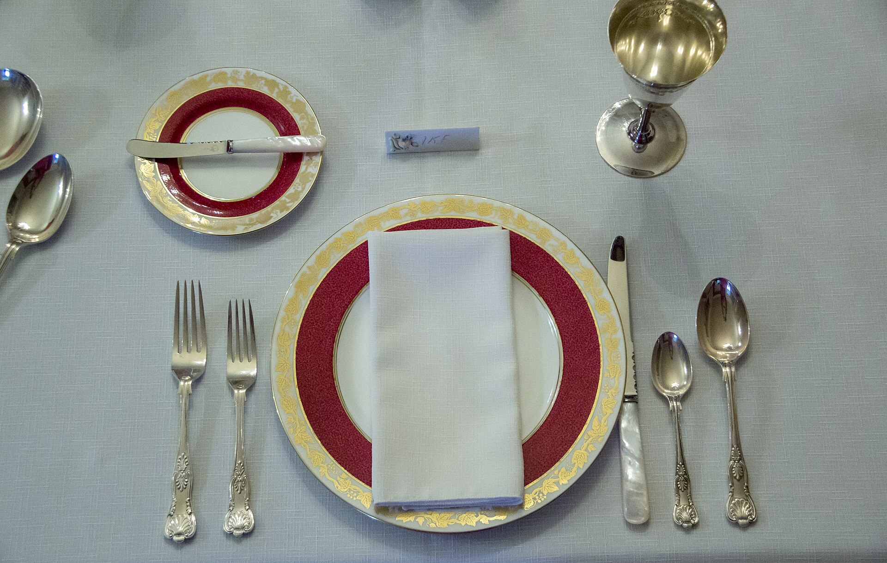

THE
UnKindness Katholikon
The fork was introduced to Italy in 1004 A.D. by Byzantine noblewoman Maria Argyropoulina.
When she died of the plague, a cardinal blamed it on not using the forks the almighty gave her.
Ancient Romans used two spoons: ligulae for hygeine and cochlearia for breaking into snail and cockel shells.
A cochlearium was a place where snails could be bred as a portable food source for soldiers.
The Sun King, Louis XIV, made rounded dinner knives law across France to reduce brawls and murders.
He also commissioned a formal ballet notation to distract court nobles with codifying dances.
Spill the Tea

What is unusual about Eisenhower's Christmas setting?
Do you know your table manners?
It is common for older generations to bemoan their younger counterparts than having less manners than their parents expected of them. This has existed since the first formalized sytems human decency. But now that traditions like setting the table before dinner are practiced less in the home, these small acts make an even larger impact. An impecible table can make all of the difference in setting a party apart. And breaking the rules can be fun, once you have mastered them.
Aphorisms from a Gastronomist on Dining:
- Let the number of your guests never exceed twelve, so that the conversation may be general.
We have seen this varied by saying that the number should never exceed that of the Muses or fall below that of the Graces. - Let the temperature of the dining-room be about 68°.
- Let the dishes be few in number in the first course, but proportionally good.
- The order of food is from the most substantial to the lightest.
- The order of drinking wine is from the mildest to the most foamy and most perfumed.
- To invite a person to your house is to take charge of his happiness so long as he is beneath your roof.

Community Profile:
Col. Archibald Blackthorn

His friends call him Archie and some other fun biographical information will go here in a paragraph I am artifically making longer by droning on and on in a single run-on sentence because I am truly a chaos demon of the highest rank and should not be allowed to do the writing for any part of this test website, game, or overall larger project since everyone knows I cannot take the task seriously.

HELP WANTED
at RavenTable Manor.
— Ms. Bella Beeton